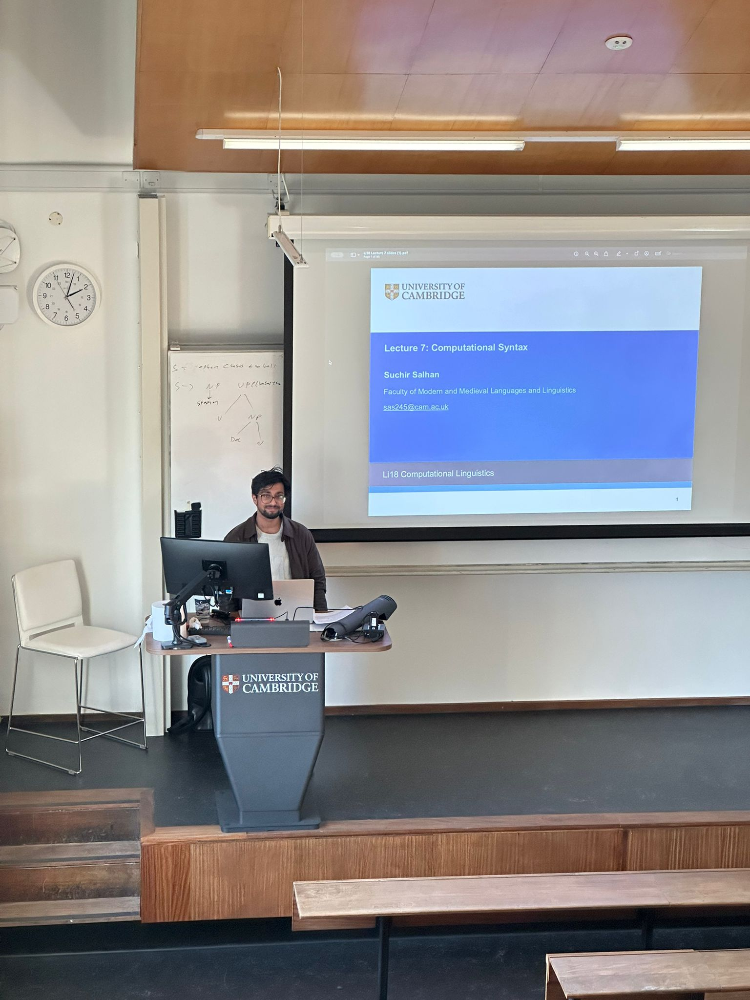

Teaching
Teaching & Supervision
Teaching across artificial intelligence, cognitive science, and linguistics, as a guest lecturer, teaching assistant, and supervisor on the Cambridge Computer Science and Linguistics Tripos — including MPhil and Part III research project proposals for prospective students.
Prospective Students
MPhil & Part III Research Projects
I am looking for motivated MPhil students interested in developing and understanding language models. Projects will be based in the Cambridge Natural Language and Information Processing (NLIP) research group, with opportunities to collaborate with researchers across Computer Science, Linguistics, and Cognitive Science. Depending on the project, there may also be opportunities for co-supervision from researchers with expertise in language model fundamentals, AI safety, interpretability, or computational psycholinguistics.
About my research
I am a PhD researcher in Computer Science at the University of Cambridge, supervised by Professor Paula Buttery. My research sits at the intersection of machine learning, computational linguistics, cognitive science, and AI safety. I study how language models acquire capabilities, how their internal representations develop during training, and how insights from human language learning can help us build more efficient, interpretable, and reliable AI systems.
I have co-authored more than 25 accepted peer-reviewed publications, including first-author work at EMNLP, EACL, and specialist venues across machine learning, computational linguistics, and cognitive science. My recent work has received two Oral Paper Awards at EMNLP 2026 and two Outstanding Paper Awards at the 2025 BabyLM Workshop. I also co-organise the BabyLM and BabyVLM research challenges, which bring together researchers developing language and multimodal models under constrained training budgets.
A central theme of my work is developmental AI: studying not only what a trained model can do, but how it acquires its capabilities, what determines the representations it develops, and whether we can monitor and influence that process. I use small language models as controlled scientific instruments, allowing us to test hypotheses about learning that would be difficult to investigate in larger, less transparent systems.
I am particularly interested in projects that combine technically rigorous machine learning with a clear scientific question. The following are four broad project areas, with example directions rather than fixed specifications. We can refine individual projects around your interests, technical background, and the time available for an MPhil.
1 · Dynamic Tokenization — Learning What a Model Should Process Together
Research area: Language model architectures, tokenization, adaptive computation, multilingual NLP.
Tokenization is often treated as a preprocessing step. An alternative view is that tokenization is a resource allocation policy: it determines how much computation and memory a model spends processing different parts of its input.
Conventional subword tokenizers assign fixed segmentation rules before a model begins learning. But not all input sequences are equally difficult. A familiar word, an unfamiliar name, a piece of code, and a morphologically complex word may benefit from very different granularities of processing. Could a model learn to allocate its computational resources dynamically, rather than being constrained by a fixed vocabulary? Recent approaches to byte-level and patch-based language modelling, alongside work on transferring pretrained tokenizers into byte-level models, create promising opportunities to investigate this question.
Possible research directions.
- Transferring pretrained tokenization: can we transfer useful segmentation structure from a pretrained BPE language model into a byte-level or tokenizer-free architecture without inheriting its fixed vocabulary?
- Adaptive tokenization: can a model learn when to process text as individual bytes, characters, subwords, or longer patches, using signals such as uncertainty or information content?
- Multilingual resource allocation: does dynamic tokenization allocate computation more effectively across languages with different writing systems, morphological structures, and levels of representation in the training data?
- Interpreting segmentation decisions: can we understand which features of an input cause a model to change its processing granularity, and whether those decisions improve downstream performance?
A particularly interesting direction is to investigate whether tokenization can be transferred as a learned computational strategy, rather than as a fixed collection of boundaries.
What you could do: implement or adapt a tokenization architecture, design controlled comparisons against standard BPE and byte-level baselines, and evaluate the resulting models on language modelling, multilingual tasks, or computational efficiency. Depending on the project, there may also be scope for analysing learned representations and segmentation behaviour.
A good fit if you enjoy: deep learning systems, model architectures, efficient training, multilingual NLP, or the interface between language and computation.
Selected references
- Cognetta et al. (2026), Tokenization: A Survey for Modern NLP.
- Pagnoni et al. (2025), Byte Latent Transformer: Patches Scale Better Than Tokens.
- Meister et al. (2026), LangMAP: A Language-Adaptive Approach to Tokenization.
2 · Sample-Efficient AI — Building Models That Learn More from Less
Research area: Language model training, efficient architectures, cognitive science, multimodal learning.
Modern AI systems are trained on enormous quantities of data, yet humans acquire language and other complex skills from comparatively limited experience. Can we develop learning systems that make better use of the data they receive?
The BabyLM initiative investigates this question by challenging researchers to train language models under constrained data budgets. I co-organise the BabyLM and BabyVLM challenges, which provide benchmarks and shared tasks for investigating sample-efficient language and multimodal learning. The goal is not simply to produce a smaller model; it is to understand which architectural and learning choices allow a model to acquire useful capabilities from limited experience. Cognitive science offers hypotheses about structured learning, curriculum, memory, and inductive biases; machine learning provides the tools to test and extend them.
Possible research directions.
- Architectures for limited-data learning: test whether recurrence, parameter sharing, adaptive computation, or alternative architectural choices improve learning when training data are scarce.
- Cognitively inspired learning strategies: investigate whether structured curricula, linguistic inductive biases, or models of human language acquisition improve sample efficiency.
- From text to multimodal learning: test whether techniques that help language models learn from limited text also benefit models trained on restricted amounts of visual or speech data.
- Evaluating what small models know: develop or apply evaluations that distinguish genuine acquisition of a capability from memorisation, superficial task performance, or reliance on dataset artefacts.
A strong project might start with a specific hypothesis about learning, implement a controlled comparison, and establish not only whether an approach works but under what conditions and why.
What you could do: train small models under controlled data budgets, develop new architectures or training strategies, and evaluate learning curves across model sizes, datasets, or training regimes. Existing open-source frameworks and shared-task infrastructure can provide a starting point.
A good fit if you enjoy: machine learning, neural network architectures, learning theory, cognitive science, or building AI systems under practical resource constraints.
3 · Developmental Interpretability — Monitoring Capabilities as They Emerge
Research area: Mechanistic interpretability, AI safety, training dynamics, capability evaluation.
Most language model evaluations examine a model after training, and most interpretability studies investigate the internal mechanisms of an already-trained system. Both approaches can miss an important question: what happens internally as a model acquires a new capability, and can we detect that development reliably?
A model's capabilities do not necessarily emerge all at once. Training may create internal representations that later support particular behaviours, or produce bottlenecks that limit what subsequent post-training can achieve. Understanding these dynamics could help us identify which capabilities are developing, when existing evaluations become informative, and whether apparent signs of progress or risk correspond to meaningful changes in the model. Rather than treating an internal component as inherently meaningful, we can test whether it predicts behaviour, whether interventions establish a causal relationship, and whether findings replicate across checkpoints, random seeds, or model families.
Possible research directions.
- Monitoring capability emergence: can internal representations or activation patterns reveal that a model is acquiring a capability before standard behavioural evaluations reliably detect it?
- Replicating interpretability findings: do proposed circuits, neurons, or linear representations persist across random seeds, training checkpoints, and model architectures?
- Pretraining and post-training: which capabilities are constrained by representations learned during pretraining, and which can be developed through subsequent optimisation?
- Reliable evaluation and AI safety: when do interpretability metrics provide useful evidence about a model's behaviour, and when can they give false reassurance?
- Cultural and social capabilities: how do models acquire culturally specific knowledge, and can we identify the training conditions or internal representations associated with reliable performance across different cultural contexts?
These questions are particularly relevant to AI safety because an evaluation that works only at the end of training may provide little warning about how a system is developing. Equally, an internal signal that looks promising but does not generalise or predict behaviour can be misleading.
What you could do: analyse model checkpoints, design behavioural and internal evaluations, perform activation interventions, or replicate existing findings under controlled conditions. Projects can range from focused empirical studies to more ambitious investigations of how capabilities develop during training.
A good fit if you enjoy: mechanistic interpretability, AI safety, experimental machine learning, causal inference, or the scientific study of neural networks.
Related research
- Chen et al. (2026), The Coverage Principle: How Pre-Training Enables Post-Training.
- Zou, Salhan & Buttery (2026), Development of Linear Truth Encodings in Language Models: A Replication Study.
- Polyakova-Reed et al. (2026), Claude Reinvestigates Herself: A Replication of Different Types of Syntactic Agreement Recruit the Same Units in LLMs.
The latter two projects form part of our work on reproducibility and reliability in interpretability research.
4 · Beetle — Computational Models of Bilingual and Multilingual Language Processing
Research area: Computational psycholinguistics, multilingual language models, language acquisition, cognitive modelling.
Most people in the world use more than one language, but computational models of human language processing have historically focused heavily on monolingual speakers. This creates a scientific gap: how can we understand the effects of language experience when our computational models do not adequately represent the diversity of that experience?
I developed Beetle, a framework and suite of controlled bilingual language models designed to investigate second-language processing. By controlling which languages a model encounters, when it encounters them, and how much exposure it receives, we can test hypotheses about human bilingualism in a systematic way. This makes it possible to investigate not only whether a model can process multiple languages, but also how the history of its language experience shapes its behaviour.
Possible research directions.
- Code-switching: how does the balance and ordering of language exposure affect a model's ability to switch between languages within and across sentences?
- Language attrition: when a model receives substantially more exposure to a second language, under what conditions does its performance in its first language deteriorate?
- Heritage bilingualism: can controlled training regimes capture aspects of learning a minority language at home while becoming increasingly dominant in a majority language?
- Human-model alignment: do model predictions and internal representations align with human reading times, behavioural experiments, or neural measurements across linguistic tasks?
- Developmental trajectories: do two models with similar final performance develop different internal representations because they encountered their languages in different orders or proportions?
- Language production: how does prior language experience affect syntactic choices, lexical selection, and cross-linguistic influence in model-generated language?
A key advantage of this framework is experimental control. Rather than comparing unrelated models trained on different datasets, we can construct matched populations that differ in a specific aspect of their learning history and test the consequences.
What you could do: train or analyse controlled bilingual models, design computational psycholinguistic experiments, compare model predictions with human behavioural data, or investigate how multilingual training influences representations and language production.
A good fit if you enjoy: language, linguistics, cognitive science, multilingual NLP, experimental psychology, or using computational models to test theories of human learning.
Selected publications
- Salhan, Arnett, Michaelov & Buttery (2026), Beetle: A Bilingual Model Suite for Modelling Second-Language Processing.
- Kubiak, Salhan, Buttery & Moscoso del Prado Martín (2026), Distinct Patterns of Brain Alignment of Language Models across Linguistic Domains.
- Barbenel et al. (2026), L1 Influence in L2 Language Models: A Human-Centric Approach.
What I look for in MPhil students
You do not need to have worked on all these topics before applying. I am interested in students who can formulate a clear research question, work independently on technical problems, and critically evaluate experimental results. Depending on the project, useful preparation may include:
- Machine learning: experience with Python and PyTorch, neural networks, model training, or empirical machine learning.
- Computer systems: an interest in efficient training, computational constraints, model architectures, or experimental infrastructure.
- Linguistics and cognitive science: experience with formal linguistics, language acquisition, psycholinguistics, or experimental methods.
- Interpretability and evaluation: an interest in causal reasoning, statistical analysis, reproducibility, or understanding the limitations of model evaluations.
These are complementary backgrounds rather than a checklist. For example, a student with a strong machine learning background might develop a new tokenization architecture, while a student with a linguistics background might design controlled experiments to test how bilingual experience changes model behaviour. I particularly value projects that go beyond reporting a benchmark improvement to explain why an approach works, where it fails, and what the results tell us about learning or intelligence.
How to get in touch
If you are interested in one of these directions, please get in touch with a brief introduction outlining:
- Your academic background and relevant technical or research experience.
- Which project area interests you and what question you would like to investigate.
- Any relevant projects, papers, code, or other work you would like to share.
You are also welcome to suggest a related research question of your own. The four areas above are starting points, and I am happy to discuss how an idea could be developed into a focused MPhil project.
Proposed supervisors: Suchir Salhan and Professor Paula Buttery, University of Cambridge.
Guest Lecturing
Cambridge Lecture Notes
I am a guest lecturer for several courses in the Linguistics and Computer Science Triposes. Here you can find my lecture materials, handouts and associated repositories.
I delivered my first guest lecture in November 2024 for an MPhil course at the University of Cambridge, with Prof Paula Buttery and Dr Fermín Moscoso del Prado Martín, on Language Model Evaluation. Since then I have contributed lectures and handouts on language modelling, parsing, and evaluation across the graduate and undergraduate curriculum.

L95 — Introduction to Natural Language Syntax & Parsing
- Part III / MPhil Advanced Computer Science
- Guest lecturer and teaching assistant. My handout covers Language Model Evaluation (BLiMP and minimal-pair benchmarks), delivered in Michaelmas 2024.
- Course topics include parsing algorithms (CKY, shift-reduce), categorial grammars, span-based constituency parsing, evaluation, lexicalised PCFGs and unification grammars, and recent topics such as discontinuous parsing.
Li18 — Computational Linguistics
- Linguistics Tripos
- 2025–26 lecture notes on Computational Linguistics — Language Models and Parsing, and Deep Neural Networks.
- Introduces students to statistical and neural approaches to language, from n-gram and PCFG parsing through to modern transformer language models.
Supervisions
Cambridge Supervision Resources
I supervise several courses for Cambridge Computer Science undergraduates, and am collating lecture notes, handouts and supervision materials for courses I supervise or have previously taken.
CST IA — First Year
- Introduction to Probability
- Machine Learning & Real World Data
- Role: Supervisor & Teaching Assistant / Lead Demonstrator
CST IB — Second Year
- Artificial Intelligence
- Formal Models of Language
- Role: Supervisor
CST II — Third Year
- Machine Learning & Bayesian Inference (MLBI)
- Role: Supervisor
- Supervision resources cover: MAP Learning (regression & classification); optimum weight vector for Ridge Regression and Iterated Reweighted Least Squares (IRLS); SVMs and KKT conditions; and the Bayesian interpretation of neural networks (Matrix Inversion Lemma).
UROP Supervision
Small Language Models UROPs 2025
An eight-week Undergraduate Research Opportunity Programme built on Pico, our small language model learning-dynamics framework, co-supervised with Prof Paula Buttery.
In 2025 I co-supervised two Small Language Model UROP students, running a structured practical course alongside their independent research projects. The programme pairs a weekly reading list with hands-on pretraining and interpretability work using Pico. I am also a Google DeepMind Research Ready mentor together with Richard Diehl Martinez and Prof Paula Buttery, supported by Google DeepMind, the Hg Foundation and the Royal Academy of Engineering.
Eight-Week Syllabus
Week 1 (14 Jul) — BabyLMs and Multilingual Evaluation
- Required: Findings of the 1st BabyLM Challenge; Findings of the 2nd BabyLM Challenge; Handout on LM Evaluation.
- Recommended: CLIMB; Less is More (cross-lingual curriculum).
Week 2 (21 Jul) — Tokenisation & Interpretability / Bilingual BabyLM
- Linear Representation Hypothesis; Arthur Conmy (DeepMind) slides; Universal Dependencies.
- Shared Grammatical Representations in Bilingual LMs; MultiBLiMP 1.0; TransformerLens.
Week 3 (28 Jul) — Pretraining LMs: The Pico Framework
Week 4 (04 Aug) — BabyLM Architectures & Feedback (ALTA, CST)
Week 5 (11 Aug) — Mechanistic and Developmental Interpretability
- Interim project presentations.
Week 6 (18 Aug) — Train Your Own BabyLM From Scratch
- Interaction Track / Multimodal Track.
Week 7 (25 Aug) — Small Language Models: Frontier Problems
- Linear Representation Hypothesis; Conmy slides.
Week 8 (01 Sep) — Small Language Models: Frontier Problems (Architectures)
- Final project presentations. UROP reports due Friday 5 September 2025, 5pm.
Language Model Primers
- CS336 — Language Models from Scratch; CS224U — Contextual Word Representations; CS224U — In-Context Learning.
Small Language Models & Further Reading
Tripos Advice
- A short set of notes for Computer Science and Linguistics Tripos students on approaching Natural Language Processing coursework, projects and supervisions.